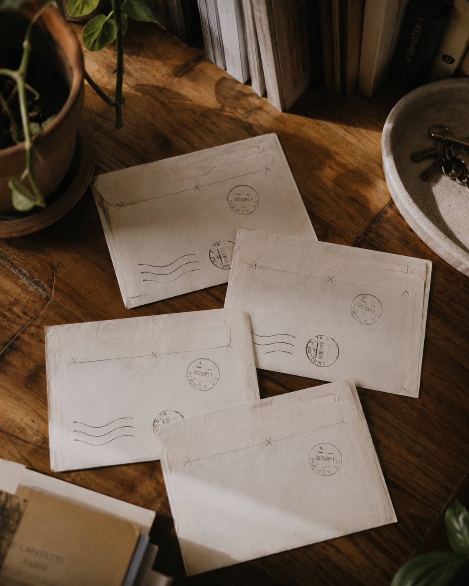
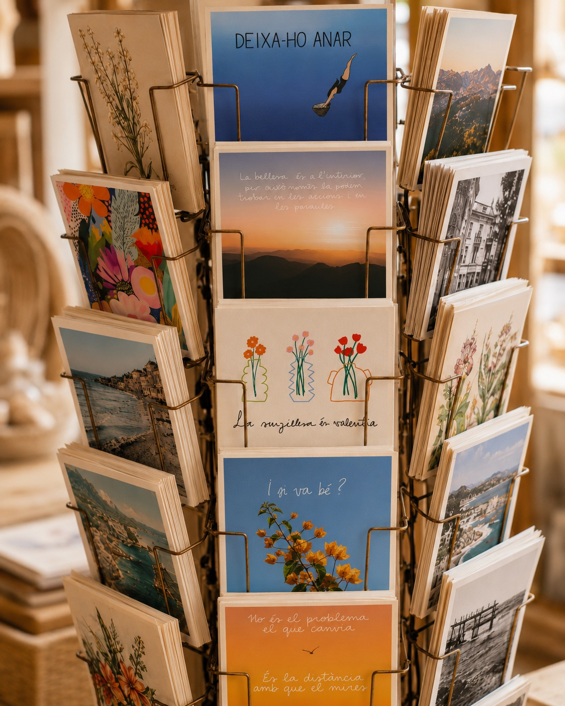

Quatre cartes físiques
Escrites i enviades amb calma durant els mesos de juliol i agost.
Torna a mirar la bústia amb il·lusió
Tens una carta.
I porta el teu nom.
En un món que ens ha acostumat a tenir-ho tot immediatament, aquesta és una invitació a recuperar el valor de l’espera.
Uneix-te a la primera edicióurant juliol i agost rebràs quatre cartes i una sorpresa. No sabràs exactament quin dia arribaran. Només sabràs que, en algun moment, hi haurà una carta esperant-te.
Dins de la correspondència

Escrites i enviades amb calma durant els mesos de juliol i agost.
Cada carta inclourà algun petit detall extra que formarà part de la sorpresa.

Creada especialment per aquesta primera edició. Una petita peça per conservar, deixar dins d’un llibre o tenir a prop.
Amb l’última carta arribarà una proposta molt especial: escriure una carta anònima a una altra persona d’aquesta primera edició. Serà un exercici senzill i pautat, pensat perquè cadascú pugui fer circular paraules boniques, rebre’n d’algú altre i tancar l’experiència sentint que ha format part d’una petita correspondència compartida.
El valor d’esperar
Perquè una carta no arriba quan tu vols. Arriba quan arriba.
I això forma part de l’experiència: esperar, obrir el sobre, llegir sense pressa i recuperar una forma de comunicació més lenta, tangible i personal.
No és només una cosa que reps.
És un moment que et reserves.
Una invitació personal
No cal fer res especial.
Només deixar un petit espai perquè les cartes arribin.
De la reserva a la bústia
Reserva la teva experiència.
Recollirem les dades necessàries per poder enviar les cartes.
Les cartes arribaran al llarg de l’estiu.
No s’avisarà del dia exacte d’arribada. L’espera forma part de l’experiència.
Amb l’última carta arribarà una proposta molt especial: escriure una carta anònima a una altra persona d’aquesta primera edició. Serà un exercici senzill i pautat, pensat perquè cadascú pugui fer circular paraules boniques, rebre’n d’algú altre i tancar l’experiència sentint que ha format part d’una petita correspondència compartida.
Edició limitada
Només aquest estiu
Només 50 bústies rebran aquestes cartes. Quan s’esgotin, la correspondència es tancarà.
La teva bústia t’espera
Un procés breu i segur: fes el pagament, indica on vols rebre les cartes i ja ho tindràs.
Pagament segur
En prémer el botó aniràs a la pàgina segura de Stripe. Allà podràs pagar i indicar l’adreça d’enviament.
Pagament processat de manera segura per Stripe.